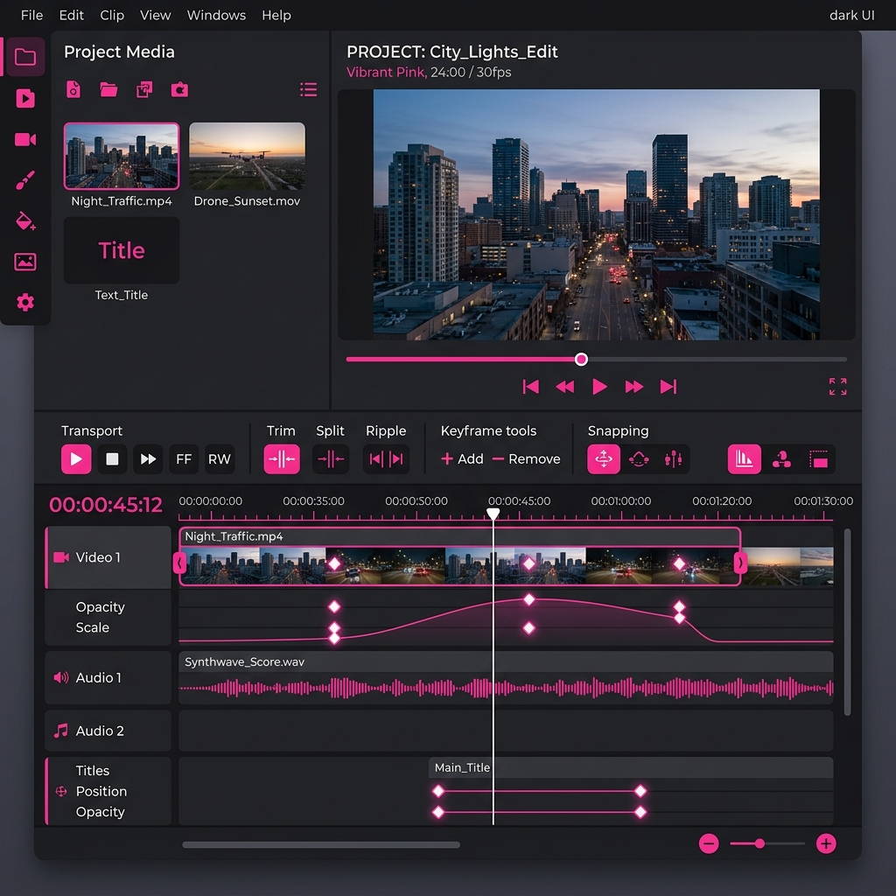

Motion That Makes Digital Products Feel Alive
I choreograph interface physics for SaaS companies, startups, and enterprise teams who know that great UX is felt, not just seen.


Featured Motion Projects


The Art of Subtlety
Transforming static states into tactile, satisfying experiences. Each state change — hover, press, load, error — becomes a moment of crafted delight.
Button morphology
Idle → Hover → Press → Loading → Success state chain.
Skeleton shimmer
Content-aware loading placeholders that match layout.
Haptic-style feedback
Micro-bounce confirming destructive or form actions.
Motion Design Workflow
01 — Discovery
Audit existing screens, identify interaction gaps, define motion principles to match your brand.
02 — Storyboard
Annotated wireframe-level timing sketches before any pixels move.
03 — High-Fi Animation
Figma / Protopie / After Effects high-fidelity motion with real easing curves.
04 — Developer Handoff
Framer Motion React code, Lottie JSON, or ProtoPie Cloud link — your team's preference.
Product teams at fast-growing companies rely on this work
Client Testimonials
"The level of polish brought to our app transitions completely elevated our product's perceived value. A master of interface physics."
"Not just pretty animations — purposeful motion that solved real UX problems in our complex data dashboard."
"Delivered a complete motion design system that our team could maintain and extend. Exceptional documentation."